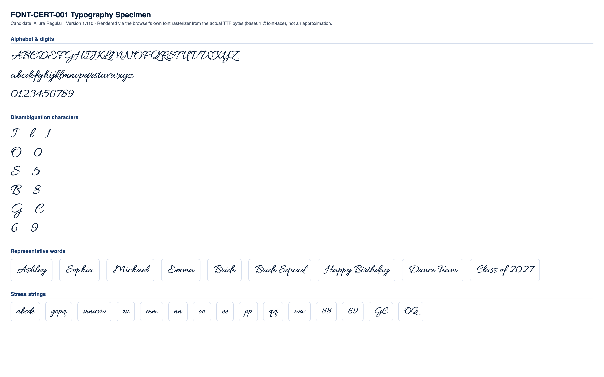

CONDITIONAL PASS
Classification and the feedback below are computed at the mid-range letter height for each stone size (the representative case). Full min/mid/max data is shown in section 4.
No blocking issues found.
Min and max height produce no more collisions or low-stone-count findings than mid height.
Medium
No blocking production failures, but 12 refinement note(s) were found (10 actionable item(s) below) -- readability, spacing, or anatomy concerns that would need addressing for production quality.
| Status | Check | Category | Detail |
|---|---|---|---|
| PASS | Successful TTF parsing | parsing | opentype.js parsed the file without error. |
| PASS | Outline format | structure | TrueType (quadratic) outlines. sfnt signature "0x00010000", opentype.js outlinesFormat="truetype". |
| PASS | Quadratic TrueType outlines | structure | TrueType file with quadratic curves confirmed: 811 curve commands found across 10 sampled glyphs. |
| PASS | unitsPerEm | structure | unitsPerEm = 1000 |
| PASS | Glyph count | structure | 1087 glyphs (font.numGlyphs=1087). |
| PASS | .notdef at glyph index 0 | structure | .notdef confirmed at glyph index 0. |
| PASS | Unicode cmap coverage | coverage | cmap maps 587 Unicode code point(s) to glyphs. |
| PASS | Required character coverage (A-Z, a-z, 0-9, space, . , ' - ! ?) | coverage | All 69 required characters map to a real glyph (glyph index != 0). |
| PASS | Required sfnt tables | structure | All required tables present: cmap, glyf, head, hhea, hmtx, loca, maxp, name, post, OS/2. |
| PASS | Family / subfamily / version / PostScript naming | naming | family="Allura", subfamily="Regular", version="Version 1.110", postScriptName="Allura-Regular". |
| PASS | Ascender, descender, line gap, horizontal metrics | metrics | ascender=800, descender=-450, hhea.lineGap=0, advanceWidthMax=2756, numberOfHMetrics=1087 (hmtx table present: true). |
| PASS | Invalid or empty glyphs | geometry | No mapped, non-whitespace, non-invisible-by-design character resolves to an empty outline. |
| PASS | Open contours | geometry | Every required-character contour closes explicitly (an explicit "Z"/closepath command) or implicitly (its final point returns to its starting point). |
| PASS | Self-intersections | geometry | Strict transversal-crossing test (deduplicated, 16-segments-per-curve flattened outline, 69 required characters) found no self- or cross-contour crossings. |
| WARNING | Zero-length or duplicate outline segments | geometry | 68 of 69 character(s) contain 2037 raw zero-length draw command(s) total (a command whose endpoint exactly duplicates the current pen position -- draws nothing, harmless no-op, but real source-file redundancy), 0 duplicate outline segments. Not production-blocking: these commands have no visual or geometric effect. Per-character counts: "A" (zero-length:48, duplicate:0), "B" (zero-length:40, duplicate:0), "C" (zero-length:18, duplicate:0), "D" (zero-length:38, duplicate:0), "E" (zero-length:32, duplicate:0), "F" (zero-length:51, duplicate:0), "G" (zero-length:34, duplicate:0), "H" (zero-length:49, duplicate:0), +60 more. |
| PASS | Coordinates outside valid TrueType ranges | geometry | All required-character outline coordinates fall within the signed 16-bit range (-32768 to 32767). |
| PASS | Inconsistent or suspicious advance widths / side bearings | metrics | Advance widths for required characters cluster reasonably around the median (469 units). |
Rendered from the actual source TTF via a base64-embedded @font-face rule (typography), and through the real production pipeline FontManager → OpenTypeProvider → GeometryEngine.generateTextLayout() → StoneLayout (rhinestone), at this milestone's own physical letter-height range per stone size:
| Stone size | Min | Mid (representative) | Max |
|---|---|---|---|
| SS6 | 35mm | 42.5mm | 50mm |
| SS10 | 45mm | 52.5mm | 60mm |
| SS16 | 65mm | 77.5mm | 90mm |
| SS20 | 80mm | 95mm | 110mm |
| SS30 | 106mm | 108.5mm | 111mm |


Successful layout generation (a non-empty StoneLayout with no collisions) is not the same as visual readability -- see each height variant's readability metrics below for objective, threshold-based findings.
| SS6 | text height: 35mm |
|---|---|
| SS10 | text height: 45mm |
| SS16 | text height: 65mm |
| SS20 | text height: 80mm |
| SS30 | text height: 106mm |
| Pair | Size | Stone counts | Chamfer distance | Result |
|---|---|---|---|---|
| "I" vs "l" | SS16 | 24 / 24 | 0.0979 | PASS |
| "l" vs "1" | SS16 | 24 / 14 | 0.0822 | WARNING |
| "I" vs "1" | SS16 | 24 / 14 | 0.0636 | WARNING |
| "O" vs "0" | SS16 | 39 / 22 | 0.0562 | WARNING |
| "S" vs "5" | SS16 | 31 / 27 | 0.0609 | WARNING |
| "B" vs "8" | SS16 | 46 / 28 | 0.0707 | WARNING |
| "G" vs "C" | SS16 | 49 / 34 | 0.0923 | PASS |
| "Q" vs "O" | SS16 | 51 / 39 | 0.1340 | PASS |
| "e" vs "c" | SS16 | 16 / 13 | 0.1008 | PASS |
| "e" vs "o" | SS16 | 16 / 14 | 0.1375 | PASS |
| "c" vs "o" | SS16 | 13 / 14 | 0.1602 | PASS |
| "6" vs "9" | SS16 | 25 / 26 | 0.0717 | WARNING |
Threshold: 0.09 (normalized, unit-height point clouds). Below threshold = flagged as visually similar.
| Char | SS6 | SS10 | SS16 | SS20 | SS30 |
|---|---|---|---|---|---|
| "A" | 42 | 38 | 37 | 41 | 41 |
| "B" | 47 | 45 | 46 | 49 | 47 |
| "C" | 37 | 33 | 34 | 38 | 35 |
| "D" | 49 | 43 | 47 | 50 | 47 |
| "E" | 35 | 33 | 34 | 37 | 36 |
| "F" | 35 | 35 | 35 | 36 | 35 |
| "G" | 55 | 47 | 49 | 56 | 54 |
| "H" | 46 | 41 | 41 | 47 | 46 |
| "I" | 24 | 22 | 24 | 25 | 24 |
| "J" | 32 | 29 | 32 | 34 | 33 |
| "K" | 39 | 33 | 35 | 38 | 37 |
| "L" | 37 | 35 | 35 | 39 | 37 |
| "M" | 60 | 50 | 49 | 55 | 54 |
| "N" | 39 | 35 | 40 | 45 | 43 |
| "O" | 45 | 37 | 39 | 47 | 44 |
| "P" | 35 | 33 | 33 | 36 | 35 |
| "Q" | 59 | 51 | 51 | 56 | 55 |
| "R" | 47 | 41 | 46 | 49 | 47 |
| "S" | 37 | 31 | 31 | 37 | 37 |
| "T" | 33 | 30 | 30 | 33 | 33 |
| "U" | 45 | 38 | 41 | 42 | 41 |
| "V" | 39 | 35 | 35 | 39 | 38 |
| "W" | 59 | 53 | 56 | 59 | 59 |
| "X" | 45 | 37 | 40 | 43 | 42 |
| "Y" | 50 | 48 | 52 | 54 | 53 |
| "Z" | 40 | 36 | 38 | 39 | 38 |
| "a" | 21 | 20 | 20 | 22 | 20 |
| "b" | 31 | 25 | 30 | 28 | 28 |
| "c" | 16 | 13 | 13 | 15 | 15 |
| "d" | 34 | 31 | 32 | 33 | 32 |
| "e" | 18 | 16 | 16 | 18 | 17 |
| "f" | 30 | 27 | 27 | 31 | 30 |
| "g" | 37 | 32 | 34 | 37 | 35 |
| "h" | 32 | 31 | 30 | 31 | 30 |
| "i" | 12 | 11 | 11 | 11 | 11 |
| "j" | 32 | 25 | 26 | 28 | 27 |
| "k" | 34 | 30 | 31 | 33 | 31 |
| "l" | 25 | 24 | 24 | 25 | 24 |
| "m" | 27 | 23 | 20 | 23 | 21 |
| "n" | 22 | 18 | 18 | 19 | 19 |
| "o" | 14 | 13 | 14 | 14 | 14 |
| "p" | 26 | 22 | 22 | 27 | 23 |
| "q" | 36 | 32 | 33 | 35 | 35 |
| "r" | 18 | 16 | 15 | 19 | 16 |
| "s" | 15 | 14 | 15 | 14 | 13 |
| "t" | 14 | 13 | 13 | 14 | 13 |
| "u" | 20 | 18 | 17 | 18 | 16 |
| "v" | 15 | 13 | 13 | 13 | 12 |
| "w" | 24 | 21 | 21 | 21 | 20 |
| "x" | 21 | 19 | 18 | 19 | 17 |
| "y" | 36 | 31 | 33 | 35 | 32 |
| "z" | 18 | 17 | 18 | 20 | 18 |
| "0" | 26 | 22 | 22 | 26 | 25 |
| "1" | 16 | 13 | 14 | 14 | 15 |
| "2" | 27 | 24 | 25 | 25 | 25 |
| "3" | 26 | 22 | 22 | 25 | 24 |
| "4" | 23 | 22 | 22 | 24 | 24 |
| "5" | 30 | 26 | 27 | 29 | 28 |
| "6" | 27 | 26 | 25 | 29 | 29 |
| "7" | 18 | 16 | 17 | 19 | 17 |
| "8" | 29 | 28 | 28 | 32 | 30 |
| "9" | 28 | 24 | 26 | 30 | 27 |
Cell values are stone count per glyph at that stone size ("coll." = colliding stone pairs found).
| Word | SS6 | SS10 | SS16 | SS20 | SS30 |
|---|---|---|---|---|---|
| Ashley | 160 stones, min spacing 2.00mm, 2 cluster(s) | 146 stones, min spacing 2.81mm, 2 cluster(s) | 147 stones, min spacing 4.07mm, 5 cluster(s) | 158 stones, min spacing 4.73mm, 4 cluster(s) | 152 stones, min spacing 6.46mm, 3 cluster(s) |
| Sophia | 138 stones, min spacing 2.00mm, 2 cluster(s) | 124 stones, min spacing 2.84mm, 4 cluster(s) | 123 stones, min spacing 4.00mm, 4 cluster(s) | 139 stones, min spacing 4.73mm, 5 cluster(s) | 130 stones, min spacing 6.42mm, 7 cluster(s) |
| Michael | 173 stones, min spacing 2.02mm, 1 cluster(s) | 157 stones, min spacing 2.81mm, 3 cluster(s) | 152 stones, min spacing 4.00mm, 6 cluster(s) | 169 stones, min spacing 4.73mm, 4 cluster(s) | 160 stones, min spacing 6.46mm, 8 cluster(s) |
| Emma | 106 stones, min spacing 2.01mm, 1 cluster(s) | 95 stones, min spacing 2.82mm, 1 cluster(s) | 90 stones, min spacing 4.00mm, 7 cluster(s) | 102 stones, min spacing 4.71mm, 6 cluster(s) | 93 stones, min spacing 6.43mm, 13 cluster(s) |
| Bride | 124 stones, min spacing 2.01mm, 1 cluster(s) | 117 stones, min spacing 2.80mm, 2 cluster(s) | 116 stones, min spacing 4.01mm, 4 cluster(s) | 128 stones, min spacing 4.72mm, 2 cluster(s) | 119 stones, min spacing 6.46mm, 3 cluster(s) |
| Bride Squad | 265 stones, min spacing 2.00mm, 2 cluster(s) | 243 stones, min spacing 2.80mm, 4 cluster(s) | 243 stones, min spacing 4.00mm, 8 cluster(s) | 267 stones, min spacing 4.71mm, 8 cluster(s) | 252 stones, min spacing 6.42mm, 12 cluster(s) |
| Happy Birthday | 359 stones, min spacing 2.00mm, 4 cluster(s) | 324 stones, min spacing 2.80mm, 5 cluster(s) | 327 stones, min spacing 4.00mm, 11 cluster(s) | 362 stones, min spacing 4.71mm, 7 cluster(s) | 333 stones, min spacing 6.45mm, 15 cluster(s) |
| Dance Team | 215 stones, min spacing 2.01mm, 3 cluster(s) | 190 stones, min spacing 2.81mm, 4 cluster(s) | 190 stones, min spacing 4.00mm, 6 cluster(s) | 210 stones, min spacing 4.73mm, 7 cluster(s) | 198 stones, min spacing 6.42mm, 13 cluster(s) |
| Class of 2027 | 249 stones, min spacing 2.00mm, 5 cluster(s) | 223 stones, min spacing 2.82mm, 9 cluster(s) | 230 stones, min spacing 4.00mm, 11 cluster(s) | 245 stones, min spacing 4.72mm, 14 cluster(s) | 236 stones, min spacing 6.44mm, 16 cluster(s) |
No glyph/size combination falls below the minimum meaningful stone count.
No counter-bearing glyph/size combination falls below the counter-bearing stone-count floor.
| Pair | Size | Chamfer distance | Stone counts |
|---|---|---|---|
| "I" vs "l" | SS6 | 0.0800 | 24 / 25 |
| "l" vs "1" | SS6 | 0.0893 | 25 / 16 |
| "I" vs "1" | SS6 | 0.0717 | 24 / 16 |
| "O" vs "0" | SS6 | 0.0543 | 45 / 26 |
| "S" vs "5" | SS6 | 0.0484 | 37 / 30 |
| "B" vs "8" | SS6 | 0.0649 | 47 / 29 |
| "G" vs "C" | SS6 | 0.0822 | 55 / 37 |
| "e" vs "c" | SS6 | 0.0889 | 18 / 16 |
| "6" vs "9" | SS6 | 0.0730 | 27 / 28 |
| "I" vs "l" | SS10 | 0.0845 | 22 / 24 |
| "l" vs "1" | SS10 | 0.0847 | 24 / 13 |
| "I" vs "1" | SS10 | 0.0681 | 22 / 13 |
| "O" vs "0" | SS10 | 0.0561 | 37 / 22 |
| "S" vs "5" | SS10 | 0.0587 | 31 / 26 |
| "B" vs "8" | SS10 | 0.0726 | 45 / 28 |
| "G" vs "C" | SS10 | 0.0884 | 47 / 33 |
| "6" vs "9" | SS10 | 0.0698 | 26 / 24 |
| "l" vs "1" | SS16 | 0.0822 | 24 / 14 |
| "I" vs "1" | SS16 | 0.0636 | 24 / 14 |
| "O" vs "0" | SS16 | 0.0562 | 39 / 22 |
| "S" vs "5" | SS16 | 0.0609 | 31 / 27 |
| "B" vs "8" | SS16 | 0.0707 | 46 / 28 |
| "6" vs "9" | SS16 | 0.0717 | 25 / 26 |
| "I" vs "l" | SS20 | 0.0892 | 25 / 25 |
| "l" vs "1" | SS20 | 0.0842 | 25 / 14 |
| "I" vs "1" | SS20 | 0.0680 | 25 / 14 |
| "O" vs "0" | SS20 | 0.0486 | 47 / 26 |
| "S" vs "5" | SS20 | 0.0614 | 37 / 29 |
| "B" vs "8" | SS20 | 0.0665 | 49 / 32 |
| "G" vs "C" | SS20 | 0.0853 | 56 / 38 |
| "6" vs "9" | SS20 | 0.0737 | 29 / 30 |
| "I" vs "l" | SS30 | 0.0861 | 24 / 24 |
| "l" vs "1" | SS30 | 0.0843 | 24 / 15 |
| "I" vs "1" | SS30 | 0.0624 | 24 / 15 |
| "O" vs "0" | SS30 | 0.0522 | 44 / 25 |
| "S" vs "5" | SS30 | 0.0514 | 37 / 28 |
| "B" vs "8" | SS30 | 0.0706 | 47 / 30 |
| "G" vs "C" | SS30 | 0.0882 | 54 / 35 |
| "6" vs "9" | SS30 | 0.0696 | 29 / 27 |
| Size | Diameter | Scale | Rendered stone size | Result |
|---|---|---|---|---|
| SS6 | 2mm | 5px/mm | 10px | PASS |
| SS10 | 2.8mm | 4px/mm | 11.2px | PASS |
| SS16 | 4mm | 3.5px/mm | 14px | PASS |
| SS20 | 4.7mm | 3px/mm | 14.1px | PASS |
| SS30 | 6.4mm | 2.5px/mm | 16px | PASS |
| SS6 | text height: 42.5mm |
|---|---|
| SS10 | text height: 52.5mm |
| SS16 | text height: 77.5mm |
| SS20 | text height: 95mm |
| SS30 | text height: 108.5mm |
| Pair | Size | Stone counts | Chamfer distance | Result |
|---|---|---|---|---|
| "I" vs "l" | SS16 | 29 / 30 | 0.0797 | WARNING |
| "l" vs "1" | SS16 | 30 / 19 | 0.0814 | WARNING |
| "I" vs "1" | SS16 | 29 / 19 | 0.0763 | WARNING |
| "O" vs "0" | SS16 | 58 / 34 | 0.0527 | WARNING |
| "S" vs "5" | SS16 | 47 / 36 | 0.0534 | WARNING |
| "B" vs "8" | SS16 | 62 / 37 | 0.0662 | WARNING |
| "G" vs "C" | SS16 | 69 / 44 | 0.0821 | WARNING |
| "Q" vs "O" | SS16 | 72 / 58 | 0.1245 | PASS |
| "e" vs "c" | SS16 | 24 / 20 | 0.0692 | WARNING |
| "e" vs "o" | SS16 | 24 / 18 | 0.1102 | PASS |
| "c" vs "o" | SS16 | 20 / 18 | 0.1061 | PASS |
| "6" vs "9" | SS16 | 35 / 37 | 0.0645 | WARNING |
Threshold: 0.09 (normalized, unit-height point clouds). Below threshold = flagged as visually similar.
| Char | SS6 | SS10 | SS16 | SS20 | SS30 |
|---|---|---|---|---|---|
| "A" | 58 | 46 | 49 | 56 | 42 |
| "B" | 68 | 57 | 62 | 66 | 47 |
| "C" | 48 | 44 | 44 | 48 | 36 |
| "D" | 75 | 63 | 65 | 70 | 48 |
| "E" | 51 | 44 | 44 | 49 | 38 |
| "F" | 47 | 40 | 42 | 43 | 37 |
| "G" | 76 | 62 | 69 | 76 | 55 |
| "H" | 69 | 52 | 58 | 59 | 44 |
| "I" | 34 | 29 | 29 | 33 | 24 |
| "J" | 50 | 37 | 39 | 44 | 36 |
| "K" | 53 | 44 | 49 | 52 | 38 |
| "L" | 55 | 49 | 52 | 57 | 40 |
| "M" | 83 | 67 | 78 | 85 | 56 |
| "N" | 59 | 51 | 52 | 58 | 43 |
| "O" | 63 | 51 | 58 | 60 | 46 |
| "P" | 50 | 41 | 42 | 42 | 37 |
| "Q" | 81 | 68 | 72 | 82 | 59 |
| "R" | 69 | 53 | 57 | 63 | 48 |
| "S" | 46 | 41 | 47 | 51 | 35 |
| "T" | 43 | 35 | 37 | 41 | 33 |
| "U" | 66 | 54 | 62 | 64 | 46 |
| "V" | 59 | 47 | 48 | 60 | 37 |
| "W" | 86 | 73 | 77 | 88 | 62 |
| "X" | 64 | 53 | 54 | 58 | 42 |
| "Y" | 83 | 63 | 70 | 74 | 57 |
| "Z" | 60 | 44 | 51 | 51 | 39 |
| "a" | 30 | 24 | 28 | 31 | 21 |
| "b" | 45 | 36 | 38 | 43 | 32 |
| "c" | 21 | 18 | 20 | 21 | 16 |
| "d" | 48 | 37 | 41 | 49 | 32 |
| "e" | 24 | 22 | 24 | 24 | 18 |
| "f" | 44 | 33 | 40 | 41 | 31 |
| "g" | 52 | 46 | 48 | 55 | 38 |
| "h" | 53 | 38 | 40 | 47 | 34 |
| "i" | 18 | 13 | 13 | 17 | 10 |
| "j" | 41 | 37 | 37 | 41 | 30 |
| "k" | 49 | 39 | 45 | 45 | 33 |
| "l" | 38 | 27 | 30 | 31 | 26 |
| "m" | 37 | 28 | 31 | 38 | 25 |
| "n" | 32 | 25 | 25 | 26 | 20 |
| "o" | 21 | 17 | 18 | 19 | 14 |
| "p" | 36 | 30 | 33 | 36 | 25 |
| "q" | 49 | 40 | 44 | 49 | 36 |
| "r" | 24 | 19 | 21 | 21 | 16 |
| "s" | 20 | 17 | 18 | 19 | 16 |
| "t" | 25 | 17 | 20 | 21 | 14 |
| "u" | 29 | 22 | 27 | 28 | 17 |
| "v" | 20 | 15 | 17 | 19 | 15 |
| "w" | 34 | 27 | 29 | 32 | 22 |
| "x" | 28 | 23 | 22 | 26 | 19 |
| "y" | 54 | 41 | 47 | 53 | 35 |
| "z" | 29 | 22 | 23 | 24 | 19 |
| "0" | 43 | 26 | 34 | 38 | 25 |
| "1" | 23 | 20 | 19 | 20 | 14 |
| "2" | 41 | 30 | 32 | 34 | 26 |
| "3" | 36 | 29 | 31 | 34 | 24 |
| "4" | 32 | 25 | 28 | 29 | 24 |
| "5" | 40 | 33 | 36 | 38 | 30 |
| "6" | 41 | 34 | 35 | 39 | 28 |
| "7" | 26 | 21 | 22 | 25 | 16 |
| "8" | 41 | 35 | 37 | 41 | 32 |
| "9" | 40 | 33 | 37 | 37 | 29 |
Cell values are stone count per glyph at that stone size ("coll." = colliding stone pairs found).
| Word | SS6 | SS10 | SS16 | SS20 | SS30 |
|---|---|---|---|---|---|
| Ashley | 238 stones, min spacing 2.00mm, 2 cluster(s) | 186 stones, min spacing 2.81mm, 3 cluster(s) | 200 stones, min spacing 4.01mm, 5 cluster(s) | 221 stones, min spacing 4.71mm, 5 cluster(s) | 164 stones, min spacing 6.40mm, 2 cluster(s) |
| Sophia | 198 stones, min spacing 2.01mm, 3 cluster(s) | 158 stones, min spacing 2.81mm, 2 cluster(s) | 176 stones, min spacing 4.00mm, 5 cluster(s) | 197 stones, min spacing 4.72mm, 4 cluster(s) | 137 stones, min spacing 6.40mm, 8 cluster(s) |
| Michael | 253 stones, min spacing 2.00mm, 2 cluster(s) | 196 stones, min spacing 2.81mm, 4 cluster(s) | 223 stones, min spacing 4.00mm, 4 cluster(s) | 241 stones, min spacing 4.70mm, 3 cluster(s) | 173 stones, min spacing 6.40mm, 6 cluster(s) |
| Emma | 151 stones, min spacing 2.01mm, 2 cluster(s) | 121 stones, min spacing 2.81mm, 4 cluster(s) | 130 stones, min spacing 4.02mm, 4 cluster(s) | 152 stones, min spacing 4.72mm, 2 cluster(s) | 106 stones, min spacing 6.43mm, 3 cluster(s) |
| Bride | 178 stones, min spacing 2.00mm, 2 cluster(s) | 146 stones, min spacing 2.81mm, 4 cluster(s) | 159 stones, min spacing 4.00mm, 2 cluster(s) | 174 stones, min spacing 4.71mm, 4 cluster(s) | 121 stones, min spacing 6.45mm, 8 cluster(s) |
| Bride Squad | 373 stones, min spacing 2.00mm, 4 cluster(s) | 303 stones, min spacing 2.80mm, 6 cluster(s) | 339 stones, min spacing 4.00mm, 5 cluster(s) | 372 stones, min spacing 4.71mm, 6 cluster(s) | 257 stones, min spacing 6.43mm, 15 cluster(s) |
| Happy Birthday | 529 stones, min spacing 2.00mm, 3 cluster(s) | 412 stones, min spacing 2.81mm, 8 cluster(s) | 458 stones, min spacing 4.00mm, 7 cluster(s) | 506 stones, min spacing 4.70mm, 8 cluster(s) | 346 stones, min spacing 6.40mm, 17 cluster(s) |
| Dance Team | 303 stones, min spacing 2.01mm, 4 cluster(s) | 248 stones, min spacing 2.83mm, 3 cluster(s) | 270 stones, min spacing 4.00mm, 4 cluster(s) | 290 stones, min spacing 4.70mm, 5 cluster(s) | 209 stones, min spacing 6.40mm, 7 cluster(s) |
| Class of 2027 | 367 stones, min spacing 2.00mm, 12 cluster(s) | 279 stones, min spacing 2.82mm, 8 cluster(s) | 309 stones, min spacing 4.00mm, 12 cluster(s) | 333 stones, min spacing 4.70mm, 12 cluster(s) | 247 stones, min spacing 6.42mm, 11 cluster(s) |
No glyph/size combination falls below the minimum meaningful stone count.
No counter-bearing glyph/size combination falls below the counter-bearing stone-count floor.
| Pair | Size | Chamfer distance | Stone counts |
|---|---|---|---|
| "I" vs "l" | SS6 | 0.0810 | 34 / 38 |
| "l" vs "1" | SS6 | 0.0695 | 38 / 23 |
| "I" vs "1" | SS6 | 0.0685 | 34 / 23 |
| "O" vs "0" | SS6 | 0.0445 | 63 / 43 |
| "S" vs "5" | SS6 | 0.0515 | 46 / 40 |
| "B" vs "8" | SS6 | 0.0652 | 68 / 41 |
| "G" vs "C" | SS6 | 0.0824 | 76 / 48 |
| "e" vs "c" | SS6 | 0.0831 | 24 / 21 |
| "6" vs "9" | SS6 | 0.0553 | 41 / 40 |
| "I" vs "l" | SS10 | 0.0840 | 29 / 27 |
| "l" vs "1" | SS10 | 0.0769 | 27 / 20 |
| "I" vs "1" | SS10 | 0.0754 | 29 / 20 |
| "O" vs "0" | SS10 | 0.0456 | 51 / 26 |
| "S" vs "5" | SS10 | 0.0477 | 41 / 33 |
| "B" vs "8" | SS10 | 0.0646 | 57 / 35 |
| "G" vs "C" | SS10 | 0.0823 | 62 / 44 |
| "e" vs "c" | SS10 | 0.0804 | 22 / 18 |
| "6" vs "9" | SS10 | 0.0599 | 34 / 33 |
| "I" vs "l" | SS16 | 0.0797 | 29 / 30 |
| "l" vs "1" | SS16 | 0.0814 | 30 / 19 |
| "I" vs "1" | SS16 | 0.0763 | 29 / 19 |
| "O" vs "0" | SS16 | 0.0527 | 58 / 34 |
| "S" vs "5" | SS16 | 0.0534 | 47 / 36 |
| "B" vs "8" | SS16 | 0.0662 | 62 / 37 |
| "G" vs "C" | SS16 | 0.0821 | 69 / 44 |
| "e" vs "c" | SS16 | 0.0692 | 24 / 20 |
| "6" vs "9" | SS16 | 0.0645 | 35 / 37 |
| "I" vs "l" | SS20 | 0.0877 | 33 / 31 |
| "l" vs "1" | SS20 | 0.0782 | 31 / 20 |
| "I" vs "1" | SS20 | 0.0812 | 33 / 20 |
| "O" vs "0" | SS20 | 0.0426 | 60 / 38 |
| "S" vs "5" | SS20 | 0.0479 | 51 / 38 |
| "B" vs "8" | SS20 | 0.0648 | 66 / 41 |
| "G" vs "C" | SS20 | 0.0791 | 76 / 48 |
| "e" vs "c" | SS20 | 0.0777 | 24 / 21 |
| "6" vs "9" | SS20 | 0.0572 | 39 / 37 |
| "l" vs "1" | SS30 | 0.0805 | 26 / 14 |
| "I" vs "1" | SS30 | 0.0706 | 24 / 14 |
| "O" vs "0" | SS30 | 0.0478 | 46 / 25 |
| "S" vs "5" | SS30 | 0.0579 | 35 / 30 |
| "B" vs "8" | SS30 | 0.0669 | 47 / 32 |
| "G" vs "C" | SS30 | 0.0840 | 55 / 36 |
| "6" vs "9" | SS30 | 0.0639 | 28 / 29 |
| Size | Diameter | Scale | Rendered stone size | Result |
|---|---|---|---|---|
| SS6 | 2mm | 5px/mm | 10px | PASS |
| SS10 | 2.8mm | 4px/mm | 11.2px | PASS |
| SS16 | 4mm | 3.5px/mm | 14px | PASS |
| SS20 | 4.7mm | 3px/mm | 14.1px | PASS |
| SS30 | 6.4mm | 2.5px/mm | 16px | PASS |
| SS6 | text height: 50mm |
|---|---|
| SS10 | text height: 60mm |
| SS16 | text height: 90mm |
| SS20 | text height: 110mm |
| SS30 | text height: 111mm |
| Pair | Size | Stone counts | Chamfer distance | Result |
|---|---|---|---|---|
| "I" vs "l" | SS16 | 40 / 43 | 0.0762 | WARNING |
| "l" vs "1" | SS16 | 43 / 29 | 0.0694 | WARNING |
| "I" vs "1" | SS16 | 40 / 29 | 0.0624 | WARNING |
| "O" vs "0" | SS16 | 68 / 51 | 0.0381 | WARNING |
| "S" vs "5" | SS16 | 56 / 45 | 0.0462 | WARNING |
| "B" vs "8" | SS16 | 81 / 46 | 0.0610 | WARNING |
| "G" vs "C" | SS16 | 91 / 55 | 0.0802 | WARNING |
| "Q" vs "O" | SS16 | 94 / 68 | 0.1246 | PASS |
| "e" vs "c" | SS16 | 28 / 24 | 0.0748 | WARNING |
| "e" vs "o" | SS16 | 28 / 25 | 0.1011 | PASS |
| "c" vs "o" | SS16 | 24 / 25 | 0.1059 | PASS |
| "6" vs "9" | SS16 | 45 / 45 | 0.0538 | WARNING |
Threshold: 0.09 (normalized, unit-height point clouds). Below threshold = flagged as visually similar.
| Char | SS6 | SS10 | SS16 | SS20 | SS30 |
|---|---|---|---|---|---|
| "A" | 81 | 65 | 69 | 71 | 45 |
| "B" | 91 | 70 | 81 | 86 | 50 |
| "C" | 58 | 49 | 55 | 59 | 40 |
| "D" | 94 | 77 | 85 | 93 | 53 |
| "E" | 69 | 56 | 60 | 67 | 36 |
| "F" | 65 | 50 | 57 | 59 | 38 |
| "G" | 101 | 82 | 91 | 97 | 59 |
| "H" | 83 | 65 | 74 | 79 | 43 |
| "I" | 49 | 36 | 40 | 46 | 25 |
| "J" | 66 | 52 | 61 | 58 | 34 |
| "K" | 71 | 58 | 63 | 69 | 40 |
| "L" | 76 | 62 | 66 | 72 | 42 |
| "M" | 104 | 85 | 94 | 103 | 57 |
| "N" | 79 | 63 | 67 | 72 | 45 |
| "O" | 77 | 64 | 68 | 73 | 49 |
| "P" | 67 | 52 | 57 | 60 | 37 |
| "Q" | 105 | 85 | 94 | 99 | 64 |
| "R" | 95 | 74 | 81 | 88 | 48 |
| "S" | 62 | 50 | 56 | 60 | 34 |
| "T" | 57 | 44 | 51 | 54 | 33 |
| "U" | 85 | 69 | 79 | 82 | 45 |
| "V" | 75 | 63 | 69 | 74 | 40 |
| "W" | 113 | 93 | 100 | 108 | 63 |
| "X" | 83 | 65 | 77 | 80 | 45 |
| "Y" | 103 | 83 | 93 | 99 | 56 |
| "Z" | 86 | 61 | 68 | 72 | 43 |
| "a" | 39 | 34 | 34 | 37 | 22 |
| "b" | 61 | 46 | 55 | 55 | 31 |
| "c" | 27 | 22 | 24 | 25 | 15 |
| "d" | 68 | 53 | 62 | 64 | 35 |
| "e" | 29 | 26 | 28 | 31 | 18 |
| "f" | 56 | 44 | 50 | 54 | 31 |
| "g" | 65 | 53 | 61 | 64 | 39 |
| "h" | 64 | 53 | 59 | 64 | 33 |
| "i" | 23 | 19 | 19 | 21 | 11 |
| "j" | 51 | 42 | 48 | 49 | 31 |
| "k" | 66 | 54 | 55 | 63 | 34 |
| "l" | 49 | 40 | 43 | 48 | 26 |
| "m" | 47 | 39 | 42 | 46 | 22 |
| "n" | 40 | 33 | 34 | 36 | 21 |
| "o" | 26 | 23 | 25 | 26 | 15 |
| "p" | 47 | 37 | 42 | 47 | 27 |
| "q" | 69 | 53 | 59 | 65 | 37 |
| "r" | 31 | 25 | 26 | 27 | 18 |
| "s" | 30 | 21 | 26 | 28 | 16 |
| "t" | 28 | 24 | 26 | 28 | 15 |
| "u" | 36 | 30 | 33 | 35 | 19 |
| "v" | 27 | 20 | 22 | 23 | 14 |
| "w" | 42 | 35 | 37 | 41 | 23 |
| "x" | 33 | 31 | 30 | 33 | 20 |
| "y" | 67 | 53 | 59 | 63 | 34 |
| "z" | 35 | 26 | 28 | 32 | 20 |
| "0" | 57 | 43 | 51 | 53 | 25 |
| "1" | 30 | 23 | 29 | 31 | 15 |
| "2" | 49 | 37 | 45 | 46 | 28 |
| "3" | 44 | 35 | 41 | 43 | 26 |
| "4" | 44 | 34 | 38 | 43 | 26 |
| "5" | 50 | 40 | 45 | 48 | 31 |
| "6" | 49 | 41 | 45 | 48 | 32 |
| "7" | 38 | 27 | 30 | 34 | 19 |
| "8" | 53 | 40 | 46 | 50 | 33 |
| "9" | 49 | 43 | 45 | 49 | 29 |
Cell values are stone count per glyph at that stone size ("coll." = colliding stone pairs found).
| Word | SS6 | SS10 | SS16 | SS20 | SS30 |
|---|---|---|---|---|---|
| Ashley | 310 stones, min spacing 2.00mm, 2 cluster(s) | 249 stones, min spacing 2.81mm, 4 cluster(s) | 276 stones, min spacing 4.02mm, 3 cluster(s) | 297 stones, min spacing 4.70mm, 2 cluster(s) | 166 stones, min spacing 6.41mm, 5 cluster(s) |
| Sophia | 255 stones, min spacing 2.02mm, 5 cluster(s) | 212 stones, min spacing 2.80mm, 3 cluster(s) | 230 stones, min spacing 4.00mm, 6 cluster(s) | 249 stones, min spacing 4.71mm, 4 cluster(s) | 139 stones, min spacing 6.41mm, 6 cluster(s) |
| Michael | 319 stones, min spacing 2.01mm, 3 cluster(s) | 265 stones, min spacing 2.80mm, 3 cluster(s) | 288 stones, min spacing 4.02mm, 6 cluster(s) | 314 stones, min spacing 4.70mm, 3 cluster(s) | 173 stones, min spacing 6.41mm, 9 cluster(s) |
| Emma | 198 stones, min spacing 2.00mm, 4 cluster(s) | 163 stones, min spacing 2.80mm, 5 cluster(s) | 173 stones, min spacing 4.01mm, 2 cluster(s) | 192 stones, min spacing 4.71mm, 4 cluster(s) | 99 stones, min spacing 6.41mm, 8 cluster(s) |
| Bride | 238 stones, min spacing 2.00mm, 4 cluster(s) | 189 stones, min spacing 2.82mm, 1 cluster(s) | 212 stones, min spacing 4.00mm, 2 cluster(s) | 223 stones, min spacing 4.73mm, 3 cluster(s) | 129 stones, min spacing 6.42mm, 8 cluster(s) |
| Bride Squad | 504 stones, min spacing 2.00mm, 6 cluster(s) | 401 stones, min spacing 2.81mm, 2 cluster(s) | 449 stones, min spacing 4.00mm, 5 cluster(s) | 473 stones, min spacing 4.73mm, 5 cluster(s) | 271 stones, min spacing 6.41mm, 14 cluster(s) |
| Happy Birthday | 677 stones, min spacing 2.00mm, 8 cluster(s) | 543 stones, min spacing 2.80mm, 5 cluster(s) | 599 stones, min spacing 4.00mm, 10 cluster(s) | 644 stones, min spacing 4.70mm, 8 cluster(s) | 361 stones, min spacing 6.41mm, 17 cluster(s) |
| Dance Team | 386 stones, min spacing 2.00mm, 7 cluster(s) | 320 stones, min spacing 2.80mm, 7 cluster(s) | 346 stones, min spacing 4.01mm, 9 cluster(s) | 374 stones, min spacing 4.71mm, 5 cluster(s) | 214 stones, min spacing 6.41mm, 10 cluster(s) |
| Class of 2027 | 473 stones, min spacing 2.00mm, 9 cluster(s) | 370 stones, min spacing 2.81mm, 7 cluster(s) | 424 stones, min spacing 4.01mm, 9 cluster(s) | 452 stones, min spacing 4.70mm, 8 cluster(s) | 261 stones, min spacing 6.41mm, 8 cluster(s) |
No glyph/size combination falls below the minimum meaningful stone count.
No counter-bearing glyph/size combination falls below the counter-bearing stone-count floor.
| Pair | Size | Chamfer distance | Stone counts |
|---|---|---|---|
| "I" vs "l" | SS6 | 0.0750 | 49 / 49 |
| "l" vs "1" | SS6 | 0.0693 | 49 / 30 |
| "I" vs "1" | SS6 | 0.0617 | 49 / 30 |
| "O" vs "0" | SS6 | 0.0394 | 77 / 57 |
| "S" vs "5" | SS6 | 0.0454 | 62 / 50 |
| "B" vs "8" | SS6 | 0.0623 | 91 / 53 |
| "G" vs "C" | SS6 | 0.0814 | 101 / 58 |
| "e" vs "c" | SS6 | 0.0676 | 29 / 27 |
| "6" vs "9" | SS6 | 0.0527 | 49 / 49 |
| "I" vs "l" | SS10 | 0.0776 | 36 / 40 |
| "l" vs "1" | SS10 | 0.0762 | 40 / 23 |
| "I" vs "1" | SS10 | 0.0667 | 36 / 23 |
| "O" vs "0" | SS10 | 0.0450 | 64 / 43 |
| "S" vs "5" | SS10 | 0.0470 | 50 / 40 |
| "B" vs "8" | SS10 | 0.0601 | 70 / 40 |
| "G" vs "C" | SS10 | 0.0822 | 82 / 49 |
| "e" vs "c" | SS10 | 0.0740 | 26 / 22 |
| "6" vs "9" | SS10 | 0.0544 | 41 / 43 |
| "I" vs "l" | SS16 | 0.0762 | 40 / 43 |
| "l" vs "1" | SS16 | 0.0694 | 43 / 29 |
| "I" vs "1" | SS16 | 0.0624 | 40 / 29 |
| "O" vs "0" | SS16 | 0.0381 | 68 / 51 |
| "S" vs "5" | SS16 | 0.0462 | 56 / 45 |
| "B" vs "8" | SS16 | 0.0610 | 81 / 46 |
| "G" vs "C" | SS16 | 0.0802 | 91 / 55 |
| "e" vs "c" | SS16 | 0.0748 | 28 / 24 |
| "6" vs "9" | SS16 | 0.0538 | 45 / 45 |
| "I" vs "l" | SS20 | 0.0733 | 46 / 48 |
| "l" vs "1" | SS20 | 0.0640 | 48 / 31 |
| "I" vs "1" | SS20 | 0.0595 | 46 / 31 |
| "O" vs "0" | SS20 | 0.0395 | 73 / 53 |
| "S" vs "5" | SS20 | 0.0472 | 60 / 48 |
| "B" vs "8" | SS20 | 0.0598 | 86 / 50 |
| "G" vs "C" | SS20 | 0.0801 | 97 / 59 |
| "e" vs "c" | SS20 | 0.0621 | 31 / 25 |
| "6" vs "9" | SS20 | 0.0525 | 48 / 49 |
| "I" vs "l" | SS30 | 0.0865 | 25 / 26 |
| "l" vs "1" | SS30 | 0.0798 | 26 / 15 |
| "I" vs "1" | SS30 | 0.0720 | 25 / 15 |
| "O" vs "0" | SS30 | 0.0467 | 49 / 25 |
| "S" vs "5" | SS30 | 0.0567 | 34 / 31 |
| "B" vs "8" | SS30 | 0.0685 | 50 / 33 |
| "G" vs "C" | SS30 | 0.0844 | 59 / 40 |
| "6" vs "9" | SS30 | 0.0714 | 32 / 29 |
| Size | Diameter | Scale | Rendered stone size | Result |
|---|---|---|---|---|
| SS6 | 2mm | 5px/mm | 10px | PASS |
| SS10 | 2.8mm | 4px/mm | 11.2px | PASS |
| SS16 | 4mm | 3.5px/mm | 14px | PASS |
| SS20 | 4.7mm | 3px/mm | 14.1px | PASS |
| SS30 | 6.4mm | 2.5px/mm | 16px | PASS |
x-height measured spread: 104.0 font units across 13 letters (declared OS/2 sxHeight: 295). Cap-height measured spread: 42.0 font units across 26 letters (declared OS/2 sCapHeight: 590).
No visual-weight outliers found across a-z.
Baseline anomalies: "d", "f", "k", "x".
All 5 tested word-space boundaries measure at least 1.3× the median intra-word letter gap (tightest: "Class of 2027" between "s" and "o" at -3.28×) -- no word-space is flagged as reading like an ordinary letter gap.
| File size | 240.9 KB |
|---|---|
| sfnt signature | 0x00010000 |
| Outline format | truetype |
| unitsPerEm | 1000 |
| Glyph count | 1087 |
| cmap entries | 587 |
| Tables present | GDEF, GPOS, GSUB, OS/2, cmap, gasp, glyf, head, hhea, hmtx, loca, maxp, name, post, prep |
| Family / Subfamily | Allura / Regular |
| Version | Version 1.110 |
| PostScript name | Allura-Regular |
| Ascender / Descender | 800 / -450 |
| Line gap | 0 |
| sxHeight / sCapHeight | 295 / 590 |
| Italic angle | 0 |
| Fixed pitch | no |
| Curve vs line commands (sample) | 811 curve / 382 line (10 glyphs) |